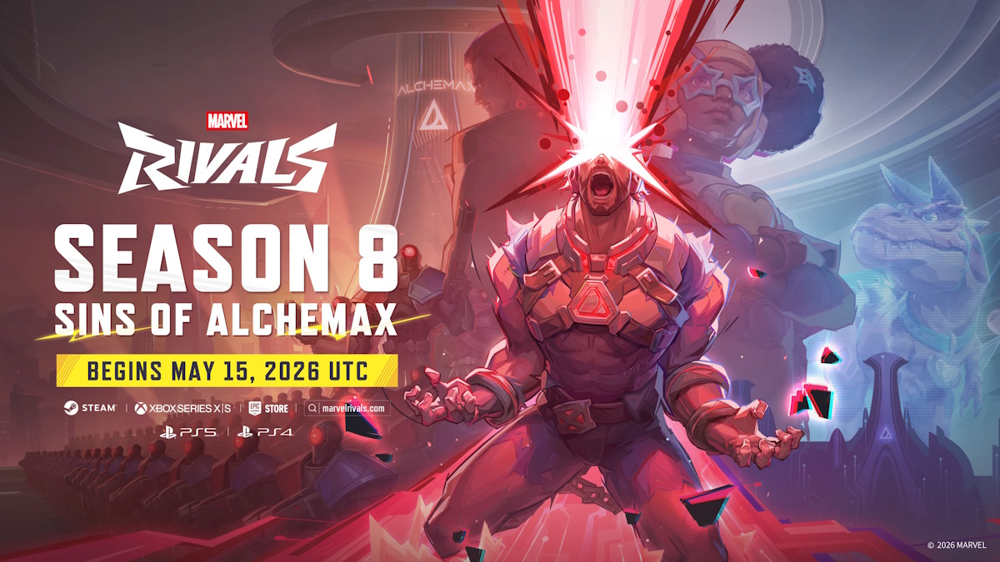

La Season 8 de Marvel Rivals, titulada Sins of Alchemax, arranca el 15 de mayo a las 9 AM UTC y trae uno de los rosters de cambios más grandes del año. El plato fuerte es Devil Dinosaur, el héroe número 50 del juego, que llega como nuevo Vanguard con un kit basado en daño físico y sangrado. Pero la lista no termina ahí: 10 héroes suben, 4 bajan, y Mantis recibe el cambio más profundo de su historia en el juego.
Devil Dinosaur: el nuevo Vanguard que nadie esperaba
La Time-Lost Devil-Beast llega con un kit enfocado en presencia frontal y daño cuerpo a cuerpo. Sus habilidades confirmadas incluyen mordida que aplica sangrado, posibilidad de agarrar enemigos con las mandíbulas y lanzarlos, escudo para bloquear proyectiles y ráfagas de rayos láser desde la boca. El ultimate es una carga frontal con pisadas sísmicas que afectan área.
Para los equipos, Devil Dinosaur abre un team-up con The Punisher: Primal Punishment. Frank Castle puede subirse al lomo del dinosaurio, disparar desde arriba y compartir el daño recibido con la bestia. Una mecánica completamente nueva en el juego que va a generar composiciones interesantes en los próximos días.
El héroe 51, Cyclops, no llega el 15 sino en el mid-season patch. Así que hay que esperar.
Buffs y nerfs de la Season 8
Esta season tiene un balance notablemente asimétrico: 10 héroes suben y solo 4 bajan. Los grandes ganadores son Emma Frost, The Thing, Iron Fist, Spider-Man, Moon Knight, Wolverine, Star-Lord, Squirrel Girl, Rocket Raccoon y White Fox. La mayoría de los buffs apuntan a Duelists que habían quedado fuera del meta competitivo en las últimas semanas.
En el lado de los nerfs:
Nuevo mapa y optimización de PC
El modo Doom Match recibe un mapa nuevo: Alchemax Headquarters, que llega el 28 de mayo (no el 15). Mientras tanto, NetEase anuncia una mejora de almacenamiento para PC: el texture pack HD pasa a ser opcional y separable. Si jugás en 1080p o 1440p, podés desinstalarlo y ahorrarte alrededor de 35 GB de espacio sin impacto visual perceptible. Para quien tiene SSD chico, es bienvenido.
¿Qué esperar del meta?
Devil Dinosaur llega a una categoría (Vanguards) que ya tiene nombres fuertes como Doctor Strange y Thor. Si los buffs a The Thing y Emma Frost son significativos, podríamos ver un meta de Vanguard con tres a cuatro opciones viables simultáneamente. El equipo de balance de NetEase viene demostrando que le importa la variedad, así que es probable que los números estén bien calibrados desde el día uno.
La Season 8 arranca el 15 de mayo. Las notas completas de balance se van a publicar el mismo día del lanzamiento.